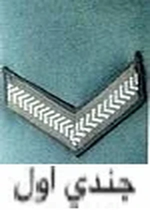
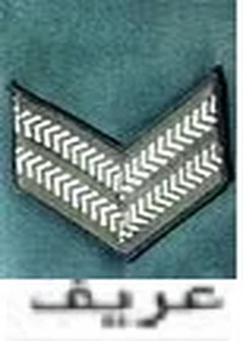
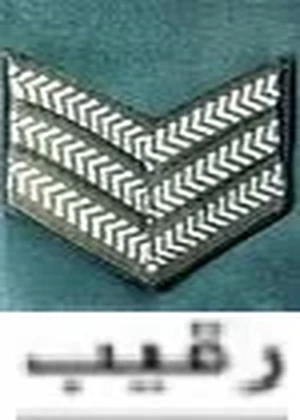
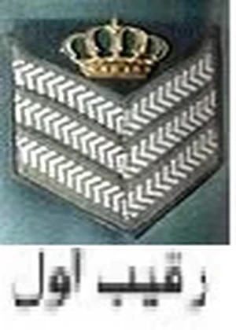
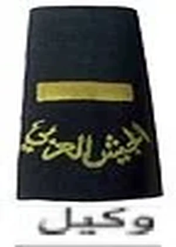
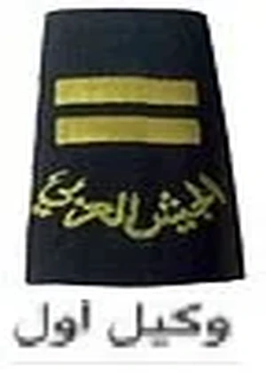

رتب ضباط الصف والأفراد

شريطة واحدة على كل كم

شريطتان على كل كم

ثلاثة أشرطة على كل كم

ثلاثة أشرطة على كل كم يعلوها التاج الهاشمي

يرتدي شارة واحدة على كل كتف بعد شارة الجيش العربي

يرتدي إشارتين متوازيتين على كل كتف بعد شارة الجيش العربي